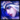

"One tribe, one people, one Freljord." -  Ashe
Iceborn warmother of the Avarosan profileicon Avarosan tribe,
Ashe commands the most populous horde in the north. Stoic, intelligent,
and idealistic, yet uncomfortable with her role as leader,
she taps into the ancestral magics of her lineage to wield a bow of True Ice.
With her people's belief that she is the mythological hero Avarosa reincarnated,
Ashe hopes to unify the Freljord once more by retaking their ancient, tribal lands..